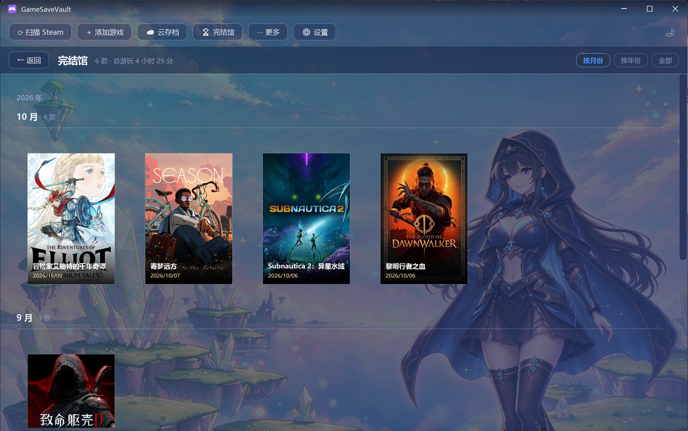

自动发现 Steam 与本地游戏的存档位置，游戏退出自动快照、一键还原历史版本， 还可通过 WebDAV 在多台电脑间同步。零后台、免安装，数据 100% 留在本机。

换电脑、重装系统、游戏更新坏档、手滑覆盖——每一种事故它都替你想好了
一键扫描 Steam 库清单与任意本地文件夹，自动认领游戏、匹配中文名与封面，还可以从 Steam 官方商店 / SteamTools 手动搜索 AppId 精准认领。
监控游戏进程，退出瞬间自动完成一次备份；长时间游玩还可开启「运行中定时快照」。每款游戏最多保留 5 份，滚动覆盖不占空间。
每次备份都是完整快照。坏档、覆盖、误删，打开时间线选一个时间点，点「还原最近」即可回到过去。
填入坚果云等任意 WebDAV 网盘即可在多台电脑间同步存档，跨设备自动互认身份，云端多余的备份还能一键认领回本地。
内置 Steam 官方商店搜索（优先）与 SteamTools（补充）双数据源，自动抓取中文名、封面图，中文游戏一眼可辨；Steam 缺数据时自动用前缀近似搜索兜底。
一个游戏多人玩？建立多个玩家档案分别备份，互不干扰。备份前自动核对文件缺失与占用体积，一切尽在详情页。
收藏的游戏永远置顶；列表支持「最近添加 / 最近游玩 / 名称」排序，启动过游戏就会记录游玩时间，最近在玩什么一目了然。
单文件 exe、解压即用，自带运行时、目标机零依赖。放进 U 盘随身带，数据独立存放，与已安装版本互不干扰。
点「扫描 Steam」读取你的 Steam 库，或用「扫描文件夹」认领学习版 / 硬盘游戏，勾选确认后自动生成游戏列表。
每款游戏可单独选择：立即备份、退出时备份、运行中定时快照、自动云存档，想省心就一路默认。
底部状态栏实时显示「监控中 N 款 · 等待游戏退出触发」。游戏一退，快照已就位；哪天需要，一键还原。
解压即用 · 无需安装 · 不捆绑任何运行时
| 文件 | GameSaveVault-1.0.4-beta-portable-x64.zip |
| 大小 | 65.7 MB |
| SHA256 | B59A66E9B87CA41DF4ECB7E3D769D95CF4355DA2FBACE35A21F896F841B1E09D |
| 更新日期 | 2026-10-11 |
| 系统要求 | Windows 10 / 11 · x64 · 自带 .NET 8 运行时 |